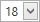

Toolbar
The Toolbar allows you to easily perform various report commands, which are divided into the following sections.

Report Commands
Use these commands to save and load report layouts.
| Icon | Command | Description |
|---|---|---|
 |
New | Creates a new report using the Report Wizard. |
 |
Open | Invokes the Open dialog that allows you to select the report layout to be opened. |
 |
Save | Saves the current report to the default file. |
 |
Save as | Invokes the Save dialog that allows you to select a file to which the current report layout should be saved. |
Edit Commands
Use the following commands to delete the selected report elements, place them to the clipboard, paste them onto report bands and cancel previous actions.
| Icon | Command | Description |
|---|---|---|
 |
Delete | Deletes the selected report elements. |
 |
Cut | Cuts the selected report elements to the clipboard. |
 |
Copy | Copies the selected report elements to the clipboard. |
 |
Paste | Pastes the contents of the clipboard to the selected report band. |
| Undo | Cancels the last change made to the report. | |
 |
Redo | Reverses the results of the last undo action. |
Font Commands
Use these commands to easily customize font, color, formatting and alignment settings.
| Icon | Command(s) | Description |
|---|---|---|
 |
Font Name | Specifies the font name of the selected elements. |
|  | Font Size | Specifies the font size of the selected elements. |
 |
Foreground Color | Specifies the foreground color of the selected elements. |
 |
Background Color | Specifies the background color of the selected elements. |
| Bold, Italic, Underline, Strikeout | Applies/removes bold formatting, italic formatting, underlining and strike through to/from the selected elements. | |
| Left, Center, Right, Justify | Specifies the horizontal text alignment of the selected elements. | |
 |
Top, Center, Bottom | Specifies the vertical text alignment of the selected elements. |
Arrange Commands
These commands allow you to change the order of stacked elements.
| Icon | Command | Description |
|---|---|---|
 |
Bring to Front | Brings the selected elements to the front of a group of stacked elements or moves the selected elements one step closer to the front. |
 |
Send to Back | Sends the selected elements to the back of a group of stacked elements or moves the selected elements one step toward the back. |
Editors Commands
Use the following commands to invoke the Watermak dialog, Page Setup dialog or Script Editor.
| Icon | Command | Description |
|---|---|---|
 |
Watermark | Invokes the Watermark dialog that allows you to add a text watermark to a report or turn a picture into a report's background. |
| Page Setup | Invokes the Page Setup dialog that allows you to modify the paper size, orientation and margins. | |
 |
Scripts | Shows or hides the Script Editor that allows you to write code for specific event handlers. |